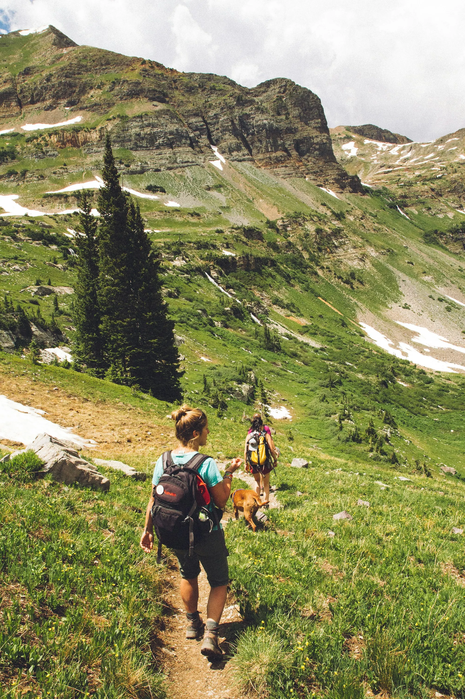

- A guided group is the simplest way to start. Ask the operator about team size, tent sharing, toilets and who your leader is before you pay.
- Plan hygiene and privacy: carry toilet paper and supplies, and ask about a single-tent option, which some operators list as an add-on.
- Save 112 (emergency), 181 (Women Helpline) and 1363 (tourist helpline) and tell two people your route and return time. Mobile signal is often missing on the trail.
Women trek in India every season. The planning that matters is mostly practical: pick a reputable operator, know where you will sleep and what the toilets are like, tell two people your plan, and keep the emergency numbers handy. This guide sticks to practical steps and official sources.
How do you choose an operator?
Look at the operator's own page and ask questions before you pay. Useful checks:
- Who leads? The operator pages we read list a certified trek leader, a guide, a cook and helpers, and a first-aid kit with oxygen and a stretcher. Ask who your leader is and how many people are in the batch.
- Group size. Smaller groups are easier to look after. Tribune reports that Kangra's district administration ordered that each guide lead no more than 10 trekkers, where past practice was often more than 50.
- What is covered. Rescue is usually not part of the fee, so check insurance. See our cost guide for what to compare.
- Registration and permits. A good operator explains the permits for your route; see trek permits in India.
- Team questions. It is fine to ask whether women are on the team, how tents are shared and what the arrangements are for toilets.

Where will you sleep, and what about toilets?
Stays vary by trek. On Brahmatal, our page lists a homestay in Lohajung and tents on the trail, with dry-pit toilets in a toilet tent, so you need to bring toilet paper. On Kedarkantha, Bikat lists a guesthouse in Sankri on the first night, then twin-sharing tents. Bikat offers single-tent accommodation as an add-on: ₹1,050 for Kedarkantha, ₹1,400 for Har Ki Dun and ₹2,000 for Hampta Pass. Himalayan Dream Treks lists tents on triple sharing, with single and double sharing at extra cost.
A tour operator's blog advises women to bring toilet paper and enough menstrual supplies, because pads, tampons and cups sold in cities may not be available on the trail. Where there is no toilet, the US National Park Service's Leave No Trace guidance is to bury waste 6 to 8 inches deep at least 200 feet from water and trails, and to carry out toilet paper. Our suggestion: pack a few sealable bags to carry out used products. See also our Leave No Trace guide.
Group or solo?
Group treks cover most practical risks: someone else knows the route, a guide notices if you are unwell and there is shelter. Solo trekking works for experienced people on short, well-used trails but comes with rules and risks; read our solo trekking guide first. If you want to go with friends, see how to organise a group trek.

How do you stay in touch?
Signal is often poor. Our trek pages note that on Kedarkantha only BSNL works after Purola, and on Brahmatal only now and then, with no charging on the trail. So:
- Share your route, camps and return time with two people. The National Park Service advises exactly this, so someone knows to raise the alarm if you are late.
- Agree a daily check-in time for when you have signal, and what your contact does if you miss it.
- Carry a charged power bank, and download maps for offline use; see offline maps for treks.
- Carry ID, a copy of your insurance and emergency contacts.
Money matters for safety too. Our trek pages note there is no ATM in Sankri for Kedarkantha and that the last ATM before Lohajung for Brahmatal is at Dewal, and that cards are not accepted in the mountains, so draw cash in a larger town and carry it in small notes. Get fit beforehand with our 8-week plan, and if you feel unwell on the trail, tell your leader early, as our altitude sickness guide explains.
Which helplines can you use?
- 112: ERSS-112 is India's unified emergency helpline for police, health and fire services, per Tribune.
- 181: the Women Helpline. Tribune lists it, along with the WhatsApp women and child helpline on 1091, as integrated with ERSS-112; integration varies by state.
- 1800 111 363 or 1363: the Ministry of Tourism's toll-free tourist helpline, listed as 24x7 in Hindi, English and ten other languages. It gives travel information and advises callers in distress, alerting the relevant authorities when needed. The notice we read is from 2016, so confirm that it is current.
These need a mobile network. On most of a trek you will have none, so your trek leader and your check-in plan are your real safety net.
What about local customs?
Treks pass through villages where people live and work year-round, and sometimes temples or shrines. Be courteous, greet people, ask before photographing anyone and keep to the paths. Ask your leader or hosts about local customs before you set out, and dress for the weather and the walking: layers, quick-dry trek pants and sturdy shoes. Our packing list covers clothing for the trail.
General planning information from public sources, not a guarantee of safety. Helpline numbers and rules change; confirm before you travel. Treqz does not run treks.
Sources
- Tribune: Adventure meets accountability
- Tribune: Emergency response system completes six years of service
- High Commission of India, Port of Spain: Tourist helpline notice (Ministry of Tourism)
- Tour My India: Female solo trekking tips in the Himalayas
- US National Park Service: Leave No Trace seven principles
- US National Park Service: The Ten Essentials
- Bikat Adventures: Kedarkantha
- Bikat Adventures: Har Ki Dun
- Bikat Adventures: Hampta Pass
- Himalayan Dream Treks: Dayara Bugyal
Quick questions
Is it safe for a woman to trek in India?
Women trek in India every season. Most of the risks on a trek, such as weather, altitude, injury and no signal, apply to everyone, and good planning, a reputable operator and regular check-ins reduce them.
What helpline numbers should I save?
112 is India's unified emergency number for police, health and fire services. 181 is the Women Helpline, and 1800 111 363 (or 1363) is the Ministry of Tourism's 24x7 multilingual tourist helpline. Confirm numbers are current before you travel.
Should a woman trek solo or in a group?
A group is easier on practical matters: shared navigation, shelter, and someone to notice a problem. If you do go solo, see our solo trekking guide for rules and check-in habits.
Can I get my own tent?
Some operators list a single-tent option for an extra fee. Bikat Adventures lists Rs 1,050 for Kedarkantha, Rs 1,400 for Har Ki Dun and Rs 2,000 for Hampta Pass; ask in advance, as it may not be available on every batch.